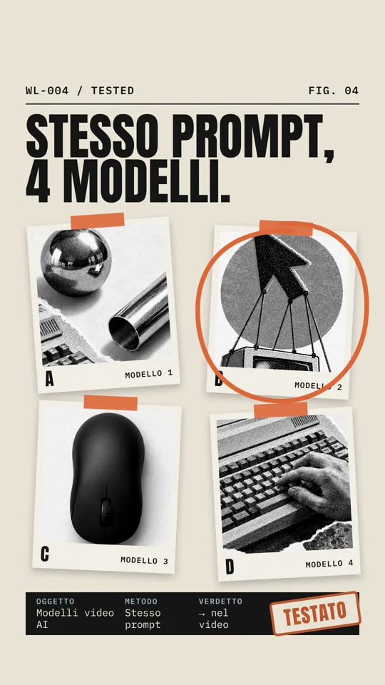
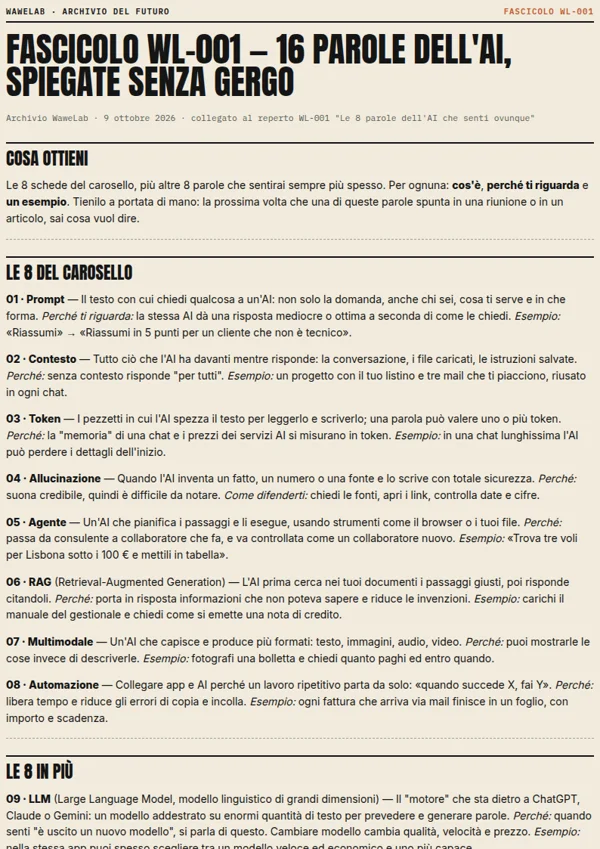
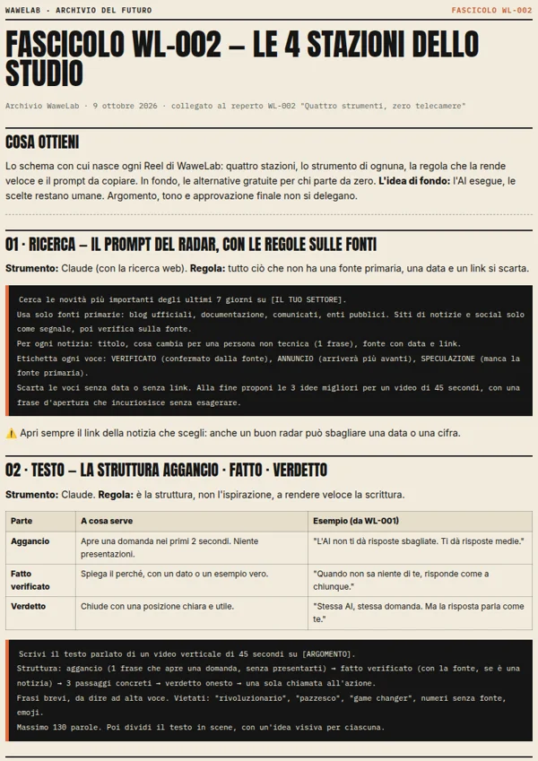

WL-000 / ARCHIVIO DEL FUTURO
Il futuro non si guarda. Si crea.
Ogni settimana apro l'archivio dell'AI: cosa esce, cosa funziona, come usarlo. Anche se non sei tecnico.


Ogni settimana metto alla prova i nuovi tool di AI. E archivio solo quello che funziona davvero. Così tu non perdi tempo. E nemmeno soldi.
CASSETTO 01 / LANCIO
Primi reperti in archivio.
Un manifesto, un glossario e il metodo dello studio. In uscita domenica 11 ottobre 2026.
Il cassetto scorre di lato


Il cassetto si riempie ogni settimana.
Segui l'archivioUna settimana in archivio.
Cinque formati, sempre negli stessi giorni.
-
Lun
Signal
La notizia AI della settimana: cosa è successo davvero, con fonte e data, e cosa cambia per te.

-
Mer
Built / Tested
Un tool costruito o messo alla prova su un caso vero. Alla fine c'è sempre un verdetto.

-
Ven
Made
Spot e prodotti immaginati con l'AI. Sono concept, ed è sempre dichiarato.

-
Sab
Carosello
Schede da salvare: glossari, confronti e procedure da rileggere quando servono.
-
Dom
Bollettino
Le news della settimana in un carosello, ognuna con la sua fonte.


Ogni reperto ha il suo fascicolo.
Il materiale completo dietro al contenuto: prompt, procedure, schede. Gratis, in PDF.
- Guarda il repertosu Instagram
- Commenta la parolaindicata nel post
- Ricevi il fascicoloin privato, una volta sola
WL-001

16 parole dell'AI, spiegate senza gergo
Le 8 del carosello più LLM, fine-tuning, embedding, MCP, vibe coding e altre tre.
Parola: GLOSSARIO
WL-002

Le 4 stazioni dello studio
Lo strumento di ogni stazione, la regola che la rende veloce e il prompt da copiare.
Parola: WORKFLOW
Come nasce un reperto.
Quattro stazioni, sempre le stesse. Le attraversiamo con un reperto vero: WL-002.
-
01
Ricerca
Tutto ciò che non ha una fonte primaria, una data e un link si scarta.
 Claude
Claude
-
02
Testo
Sempre la stessa struttura: aggancio, fatto, verdetto. È la struttura a rendere veloce la scrittura.
Claude
-
03
Voce
Generata da un campione registrato dal founder. Tre versioni, resta quella senza esitazioni.
Higgsfield -
04
Montaggio
Ogni parola ha il suo tempo. È il video che si adatta alla voce, non il contrario.
 Whisper
HyperFrames
Whisper
HyperFrames
blog.google
Google: SynthID Detector per tutti
07.10.2026
nessun link
Thread virale su un nuovo modello
nessuna data
Scartataopenai.com
OpenAI: GPT-6 for everyone
07.10.2026
sito di notizie
Articolo senza la fonte originale
nessun link alla fonte
Scartatagaranteprivacy.it
Garante privacy: provvedimento IQVIA
02.10.2026
3 tenute / 2 scartate
Script, esempio da WL-001
Aggancio
L'AI non ti dà risposte sbagliate. Ti dà risposte medie.
Fatto
Quando non sa niente di te, risponde come a chiunque.
Verdetto
Stessa AI, stessa domanda. Ma la risposta parla come te.
Take 1
Ripete una parola
Take 2
Si ferma a metà
Take 3
Nessuna esitazione
Scelta
Voce
Parole
Scene
Archiviato
Le regole dell'archivio
- Ogni dato ha una fonte con la sua data, oppure viene da un test fatto davvero.
- Notizie, ipotesi e opinioni restano separate.
- Prodotti e spot immaginari sono dichiarati come concept.
- Il timbro "verificato" va solo su ciò che è stato provato.

Reperto zero.
- Mestiere
- Full-stack developer
- Missione
- Portare l'AI anche a chi non scrive codice
- Metodo
- Ogni tool provato su un lavoro vero, prima di finire in archivio
- Uscite
- Cinque a settimana, sempre negli stessi giorni
- Contatto
- @wawelab.ai
Lo stesso metodo, per la tua attività.
Spot, siti e automazioni fatti con gli stessi strumenti dei reperti.

Spot prodotto con l'AI
Un video per il tuo prodotto, dall'idea al montaggio, senza set né troupe.

Sito vetrina
Un sito chiaro e veloce, progettato e scritto con l'AI. Come questo.

Automazioni e agenti
Il lavoro ripetitivo che oggi fai a mano, affidato a un flusso su misura.